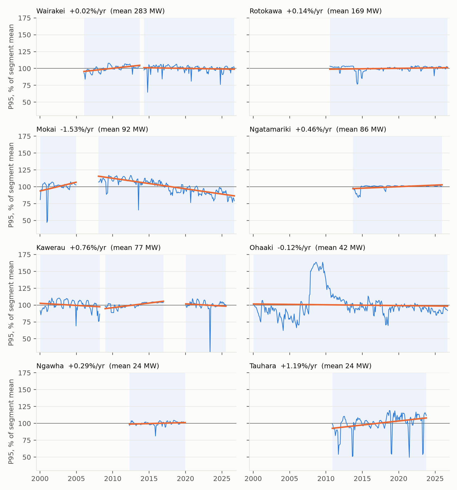
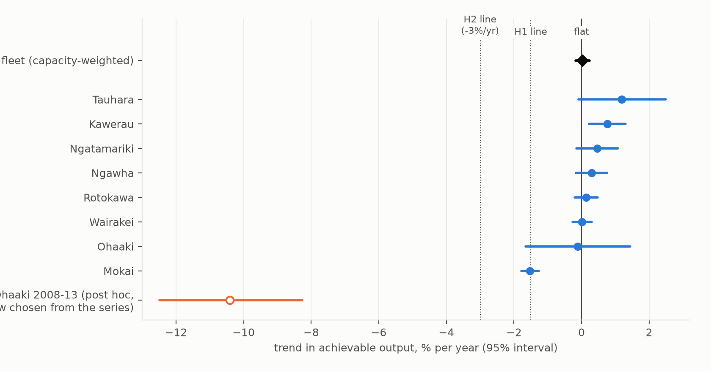

Verdict: Supported (H1); the companion claim (H2) is Refuted. Achievable output is measured as each month's 95th percentile of half-hourly generation. On that measure, the fleet has declined far more slowly than the preregistered bar of 1.5% a year.
- Preregistered estimate: the capacity-weighted trend across the eight fields, between capacity changes, is +0.02% a year (95% interval −0.18 to +0.22).
- After review: handling commissioning ramps and a capacity change the plan missed moves it to between about 0 and −0.2% a year.
- Last decade: −0.4% a year (−1.0 to +0.1).
- No field declines faster than 3% a year. The steepest is Mokai, −1.5% a year since 2008.
The net hides real differences. Mokai declines steadily, and Wairakei since 2015 and Ohaaki since 2019 decline slowly. Kawerau's main station, Poihipi and the newer binary plants rose, mostly through upgrades and commissioning. Whether make-up drilling has kept pace cannot be read from metering.
The "3% annual run down" in MBIE's geothermal study is not a forecast of falling output. It is the assumed natural decline of wells that make-up drilling is costed to offset. The metered fleet has fallen far more slowly than 3%.
In plain terms
New Zealand's energy plans treat geothermal power stations as producing about the same amount year after year. But underground steam reservoirs run down, and companies drill new wells and upgrade plant. We wanted to know whether, in practice, the stations have held their output.
We used the electricity market's public half-hourly meter readings for geothermal stations since 2000. For each field and month we took the output level reached in the best 5% of half-hours. That is a measure of what the field can produce, which ignores breakdowns and maintenance shorter than about a month. We fixed the method and the tests before looking at any results.
Across the eight fields, achievable output has barely changed: somewhere between flat and a fall of about 0.2% a year, depending on how the start-up months of new plant are handled. Over the last ten years it is about 0.4% a year. No field is falling anywhere near 3% a year. Mokai shows the clearest decline, about 1.5% a year since 2008; that field also supplies steam to greenhouses and a milk-processing plant.
Behind the near-flat total, some fields slip while others have been upgraded, and at Ohaaki output rose sharply in 2007–08 and then fell back over five years. Our data can show what the stations delivered, not why.
The government's "3% a year" turns out to describe how fast wells decline before drilling new ones, which the planning models assume is paid for. Across the fleet, output has fallen much more slowly than 3% a year.
What was asked
The lead (scouted 2026-10-16, University of Auckland Energy and Movement signature research area) claimed:
- The fleet's achievable output declines by less than 1.5%/yr, under half "MBIE's 3%/yr run down".
- At least two of the eight fields decline faster than 3%/yr.
- So a single fleet-wide parameter misstates field-level output by more than a factor of three.
Reading MBIE's source before any data changed the interpretation (deviations D1). Lawless, van Campen & Randle (Future Geothermal Generation Stack, Revision D, March 2020, §3.3) use "an estimate of 3% annual run down" to size the cost of make-up drilling: "for a 55MW project … around one well every 5.5 years". That drilling is carried as fixed O&M so output is maintained, and the same passage says the 3% "would be too low for Ohaaki … and too high for Kawerau". The 3% is therefore gross run-down before drilling, and metering measures output after it.
EDGS 2024 does not model any decline in existing geothermal output. By FGGS's account, EDGS 2016 instead modelled consent expiries at Mokai and Wairakei as retirements. The lead's thresholds were kept as decision lines:
- H1 (primary): the fleet's capacity-weighted trend in achievable output is a decline of less than 1.5%/yr. Supported if the 95% interval's lower end is above −1.5; Refuted if its upper end is below −1.5.
- H2 (secondary): at least two fields decline faster than 3%/yr. Supported if two have a point estimate below −3 with the interval below 0; Refuted if fewer than two have an interval reaching below −3.
What was already known
| Work | What it establishes | What it leaves open |
|---|---|---|
| MBIE FGGS (Lawless et al. 2020) | 3%/yr gross run-down for costing make-up drilling; Ohaaki 108 MW originally, 57 MW installed, ~40 MW produced (2019); Mokai "maintaining close to full output" | measured trends |
| NZGA annual reviews; MBIE Energy in NZ | annual generation by plant and field; note that some fields decline while others hold | separating capability from outages, upgrades and new plant |
| O'Sullivan et al. (2015, WGC); Kortright (2015, WGC) | Wairakei and Ohaaki reservoir histories; Ohaaki "around 40–45 MW net since 1999" | other fields; a common measure |
| NZ Geothermal Workshop papers | single-field reservoir and emissions studies | a fleet-wide, metering-based measure |
Field trends are noticed in annual generation statistics. What is new here is a capability measure (P95) separated from outages, and segmented at capacity changes, across the fleet. No such estimate was found (searches 2026-10-16 and 2026-10-17, and by the reviewer).
How it was done
Data and its gaps. EMI Generation_MD: half-hourly metered generation by plant with fuel codes, 2000-01 to 2026-09 (321 monthly files, retrieved 2026-10-16). Every geothermal-coded plant in those files is mapped (19 plant series). But the files do not cover every geothermal plant (D4):
- Missing entirely: Te Ahi O Maui (25 MW, 2018) cannot be identified before 2025-09. GDL (8 MW), TOPP1 (21 MW) and the old Kawerau binary never appear.
- Missing for years: Ngāwhā OEC4 (31.5 MW, commissioned around January 2021) is absent until 2024-01.
- Kawerau is not a field in these data. Its record is the Kawerau KGL station (100 MW, 2008), a 5.5 MW plant before 2008, and from 2020 two small series (13–15 MW and 28–37 MW, the latter a mill's net export) whose exact identity is uncertain.
The lead's unit-level dataset holds geothermal units only at Wairakei and Ohaaki, and only for 2000–2003 (D1).
The field is the unit. Plants on one field share a consented fluid take. At Wairakei, fluid "is prioritised to Te Mihi and Poihipi … Wairakei utilises the balance and ramps up during outages on other plants" (Contact, in FGGS). A single plant there reflects allocation, not the reservoir.
Achievable output is the month's 95th percentile (P95) of half-hourly field output: the level reached in about 36 hours of the month. Outages shorter than about a month do not register. In synthetic tests it recovered a true −2.00%/yr trend through maintenance, forced outages, summer derating and flexing. With outages growing more frequent and no true decline, P95 read −0.01%/yr while the monthly mean read −1.86%/yr. P95 does register multi-month outages of a single unit, and commissioning ramps, as lost capability (D4).
Segments. Each field's record is cut where its set of reporting plants changes, or at a documented capacity change from FGGS Table 2, the EMI register and Mercury's announcements:
- the Wairakei binary plant (2004–05);
- Mokai's stages (2005, 2007);
- Kawerau KGL's 2017 rerating, to 107 MW per FGGS Table 2 (its text says 117; no step is visible in the metering);
- Te Ahi O Maui (2018; not in the data then);
- Ngāwhā OEC4 (2020–21);
- Ngā Tamariki OEC5 (2026).
New plants' first six months are excluded. Retirements and deratings are not cut. Twelve segments of at least five years result, exactly those the plan predicted from the coverage inventory. The review found one documented change the plan missed: Poihipi's connection to the Wairakei steamfield in 2006, reaching full capacity in 2011.
Trend. Within each segment: log P95 on month-of-year effects plus a linear trend, by GLS with AR(1) errors. Field trends combine segments by inverse variance. The fleet trend weights fields by mean P95: Wairakei 36%, Rotokawa 21%, Mokai 12%, Ngā Tamariki 11%, Kawerau 10%, Ohaaki 5%, Ngāwhā 3%, Tauhara 3%. The intervals are approximate: at the most autocorrelated segments (Ohaaki, Ngā Tamariki, Wairakei 2006–13, Kawerau 2008–16) their true coverage is nearer 87–90% than 95% (D4).
Results
H1: Supported. Fleet decline is far below 1.5% a year
| field | segments | mean P95 | trend, %/yr (95% interval) |
|---|---|---|---|
| Wairakei (Wairakei, Poihipi, Te Mihi) | 2006-01–2013-09; 2014-04–2026-09 | 283 MW | +0.02 (−0.27 to +0.30) |
| Rotokawa (Rotokawa, Nga Awa Purua) | 2010-07–2026-09 | 169 MW | +0.14 (−0.20 to +0.47) |
| Mokai | 2000-01–2004-12; 2008-01–2026-09 | 92 MW | −1.53 (−1.78 to −1.27) |
| Ngā Tamariki | 2013-09–2025-12 | 86 MW | +0.46 (−0.15 to +1.07) |
| Kawerau (5.5 MW plant to 2008; KGL; KGL + small series from 2020) | 2000-01–2008-03; 2008-12–2016-12; 2020-01–2025-07 | 77 MW | +0.76 (+0.22 to +1.30) |
| Ohaaki | 2000-01–2026-09 | 42 MW | −0.12 (−1.65 to +1.44) |
| Ngāwhā | 2012-04–2019-12 | 24 MW | +0.29 (−0.16 to +0.75) |
| Tauhara (Te Huka) | 2010-11–2023-10 | 24 MW | +1.19 (−0.09 to +2.49) |
| fleet, capacity-weighted | +0.02 (−0.18 to +0.22) |


| sensitivity | fleet, %/yr (95% interval) | H1 | H2 |
|---|---|---|---|
| P50 instead of P95 | +0.08 (−0.15 to +0.31) | Supported | Refuted |
| P99 | +0.03 (−0.17 to +0.22) | Supported | Refuted |
| monthly mean (capacity factor) | +0.02 (−0.22 to +0.26) | Supported | Refuted |
| equal field weights | +0.15 (−0.14 to +0.44) | Supported | Refuted |
| excluding Wairakei | +0.02 (−0.23 to +0.27) | Supported | Refuted |
| Newey–West intervals | +0.18 (+0.00 to +0.36) | Supported | Refuted |
| last ten years only (2016-10–2026-09) | −0.44 (−0.99 to +0.12) | Supported | Inconclusive |
| post hoc (D4): Wairakei 2014– segment from 2015-01 (Te Mihi's ramp) | −0.09 (−0.27 to +0.09) | Supported | Refuted |
| …plus Ngā Tamariki from 2014-10 | −0.13 (−0.29 to +0.02) | Supported | Refuted |
| …plus Wairakei 2006–13 dropped (Poihipi's connection) | −0.19 (−0.34 to −0.03) | Supported | Refuted |
| post hoc: rule-based (12-month ramps, Poihipi window, Kawerau = KGL only) | −0.04 (−0.22 to +0.14) | Supported | Refuted |
| post hoc: segments combined by capacity, not inverse variance | +0.10 (−0.15 to +0.36) | Supported | Refuted |
| post hoc: AR(2) errors | +0.02 (−0.19 to +0.23) | Supported | Refuted |
| post hoc: months below 85% of a 13-month rolling median dropped | −0.08 (−0.24 to +0.08) | Supported | Refuted |
Every specification is far from −1.5%/yr. Whether the fleet is exactly flat depends on choices the data cannot settle. Two field trends are mostly start-up artefacts: Ngā Tamariki's +0.46 comes almost entirely from its low first year (+0.05 from 2014-10), and Wairakei 2006–13's +1.19 is Poihipi being brought up to full capacity. Over the last decade, Wairakei field is −0.52%/yr (−0.78 to −0.27) and Mokai −1.47 (−2.15 to −0.78). H2 turns Inconclusive there only because Kawerau's and Tauhara's short recent records have wide intervals.
H2: Refuted. No field declines faster than 3% a year
No field's interval reaches −3%/yr in any specification. Mokai is the field with the clearest sustained decline: −1.54%/yr (−1.80 to −1.29) from 2008 to 2026, from about 110% to about 85% of its segment mean (F1). Three things bear on reading it:
- MBIE's study described Mokai as "maintaining close to full output" in 2020, which is not what the metering shows.
- The field also supplies steam to large greenhouses and a milk-processing plant (from 2011). Fluid used for heat is fluid not flashed for power.
- Its main fluid-take consent expired in 2024.
The decline may reflect any of these, or reservoir change. The metering cannot tell them apart.


Post hoc: what lies inside the near-flat total (D3, D4)
- Ohaaki (annual median P95). 35–40 MW in 2000–07, then two steps in late 2007 to 60–68 MW, held for about two years, back to ~40 MW by 2013. Since 2019 it has drifted at −1.3%/yr (−1.9 to −0.7). The cause of the 2007–09 plateau is not documented in the sources we could reach. Contact's 2013 account says output has been "around 40–45 MW net since 1999". A change in what the OKI2201 meter covers cannot be excluded. The fall from the plateau fits −10.4%/yr over 2008–13. That window was chosen from the series, and the slope depends on it: −12.1 over 2008–12, −5.1 over 2008–16, −1.7 over 2008–26. It measures the size of one episode, not a run-down rate to set against MBIE's 3%.
- Year-to-year steps of ≥ 15% inside segments appear only at Ohaaki (2008 up, 2010 down, 2018 down, 2019 up), Tauhara (2012 up) and the small pre-2008 Kawerau plant. The 2018–19 Ohaaki steps and part of Tauhara's are multi-month unit outages, which P95 counts as lost capability.
- Rolling five-year trends stay between −3.9% and +4.2%/yr everywhere except Ohaaki (−11% to +22%).
- The increases are upgrades, not demonstrated drilling. Kawerau KGL rose from about 97 to 105–108 MW over 2009–14, Poihipi was brought up to full capacity over 2006–11, and Ngā Tamariki and Te Mihi were still ramping in their first year.
What this does and does not show
It shows that the achievable output of existing geothermal plant, measured between capacity changes, declined far more slowly than 1.5% a year over 2000–2026 in every specification tried: between about +0.1 and −0.2%/yr, and −0.4%/yr over the last decade. It also shows that no field's realised decline approaches the 3% gross run-down MBIE uses for costing make-up drilling. The fleet total is near flat because slow declines (Mokai, recent Wairakei and Ohaaki) are roughly matched by upgrades elsewhere.
It does not show that the reservoirs are not declining, or that make-up drilling has offset them. Six limits:
- Achievable is after investment and consent limits. Trends include drilling, upgrades, consent limits and fluid allocation; the study has no drilling data.
- Coverage is incomplete. Several Kawerau plants and three years of Ngāwhā OEC4 are not in the metering used, and Kawerau's record is one station plus fragments.
- New capacity is excluded by design. Total geothermal generation rose with new plant; this study measures existing plant between such changes.
- P95 counts multi-month unit outages and commissioning ramps as lost capability. The plan's six-month ramp was too short for Te Mihi and Ngā Tamariki.
- Short recent records at Ngāwhā, Tauhara and Kawerau cannot yet be measured.
- Eight fields. The fleet estimate is dominated by Wairakei and Rotokawa (57% of the weight), and its intervals are approximate.
For planning, the result is consistent with treating existing geothermal as close to steady, provided the upkeep MBIE costs actually happens. Two things are worth watching: the last decade's slight softening (−0.4%/yr, mostly Wairakei and Mokai), and fields like Ohaaki, where output can change by half within a few years.
Scope and care
Several fields are owned, co-owned or hosted by iwi and Māori land trusts. Examples are the Tuaropaki Trust at Mokai, Ngāti Tūwharetoa and Tauhara North No. 2 Trust interests, and the Kawerau A8D Ahu Whenua Trust. The trends here describe plant capability under current consents, from public metering. They are not judgements about resource stewardship. Mokai's decline in particular may reflect deliberate use of steam for direct heat, consent conditions or reservoir management as much as resource change.
Process and deviations
Four logged deviations:
- D1: the 3% reinterpreted, the dataset changed, the field made the unit, and GLS-AR(1) chosen from synthetic tests, all before any output.
- D2: a date-parsing bug, fixed before any trend was computed.
- D3: post-hoc drilling-cycle checks.
- D4: acting on the adversarial review (publish with edits). It corrected the data-coverage claim, added the
alternative segmentations, AR(2), the outage filter and the Ohaaki windows (
code/review_response.py), and rewrote the framing.
Commits: plan c72cc2c, D2 fix d0be78c, results 0ab005b, review response 2f8c705.
Reproducing it
bash code/prefetch_gmd.sh # EMI Generation_MD 2000-01..2026-09; compare data/raw/VINTAGE_emi_gmd.txt
venv/bin/python code/test_analysis.py # 9 synthetic checks
venv/bin/python code/build_series.py # monthly P95/P50/P99/mean per plant and field -> data/processed/
venv/bin/python code/analysis.py # H1, H2, sensitivities -> results/tables/primary.json (reads data/processed/)
venv/bin/python code/supplementary.py # post-hoc steps, run-downs, rolling trends
venv/bin/python code/review_response.py # post-hoc segmentations, AR(2), outage filter, Ohaaki windows
venv/bin/python code/figures.py
results/tables/ holds copies of the monthly series (field_monthly.csv, plant_monthly.csv,
field_membership.csv) identical to those build_series.py writes. Also released: primary.json,
supplementary.json, review_response.json and rolling_60m_trend.csv. EMI data are public and not
redistributed.